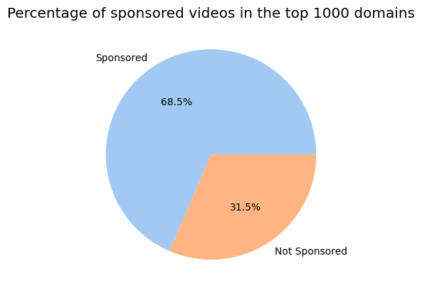
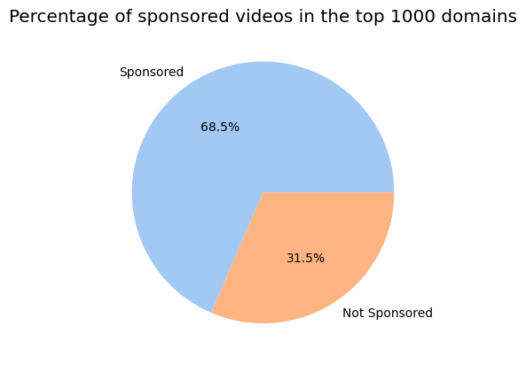
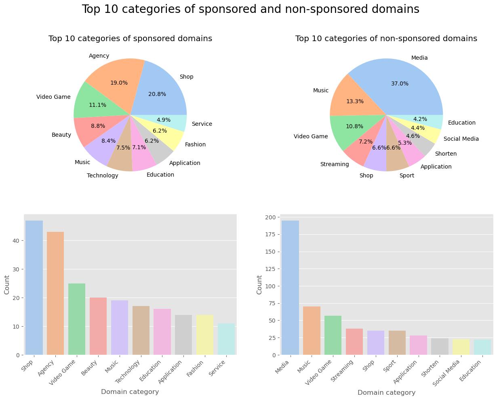
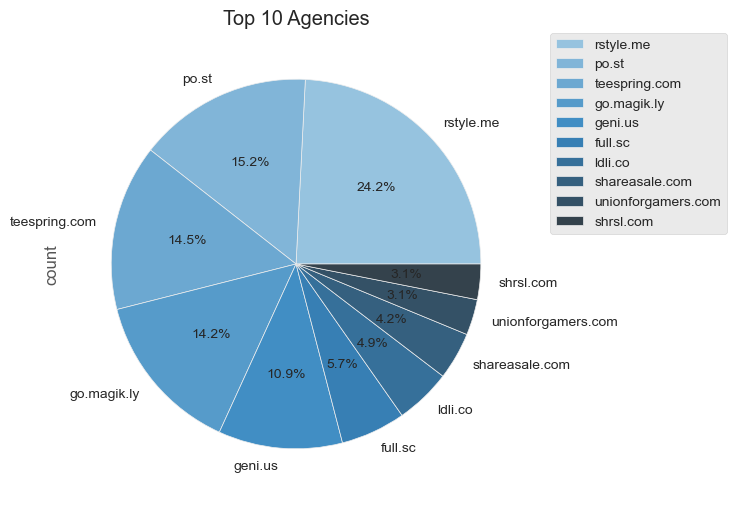

Introduction
With the rise of YouTube since 2005, content creators rose to fame with an expanding follower base. Businesses saw this as an opportunity to sponsor their content, exploring marketing potential with creators. Nowadays, sponsorships are a common practice on the platform, with many YouTubers making a living off of them.
Ad-dressing the issue
« F**k off with the annoying ads jeez, people are getting head cancer from this s**t. You s**k! »
Sponsorships and ads on YouTube have been a topic of debate among content creators, viewers, and industry experts. Some content creators rely on sponsorships and ads as a primary source of income, but some viewers find them disruptive and annoying.
What are we looking for?
In this data story, we will navigate the YouTube Ad landscape: we suspect that some types of videos might be more likely to be sponsored than others. For example, the Gaming industry is known to be a lucrative market for advertisers, but is it the only one?
From our own user experience, we already have a list of sponsors in mind that we might encounter in our analysis. But are they really the most common ones? Or are we naturally targetted by them because of our own interests? We hope to get a better understanding of the YouTube Ad landscape by analysing the data.
Finally, we will try to summarize our findings to answer the question: Do sponsorships help content creators build a stronger community, or do they actually have some downsides?
Without further ad-o, let's dive in the data!
Who sponsors what?
Classifying sponsored videos is not a trivial task. We retrieved all the links from the video descriptions and classified the 1000 most common domains (by hand!) into a category and flagged them as sponsor-related or not.
 

From these graphs, we notice that about a quarter of domains that come up in our analysis are sponsor-related, which represents more than two-thirds of the total number of videos on YouTube.
Every bar plot is related to the pie chart above itself. We notice that the sponsored domains and non-sponsored domains do not have the same distribution of categories. About half of sponsored domains are related to shops, agencies and video games. On the other hand, Media and Music are very popular among non-sponsored domains.

Taking a look at the data from another perspective, we now see the distribution of categories on videos. Before diving into the data, we did not expected sponsoring agencies to be so popular. But looking at the above pie chart, we see that more than a third of sponsored videos are sponsored by agencies!
Agen-who?
Agencies for monetization on YouTube are companies or organizations that help YouTube creators monetize their content, typically by connecting them with brands or advertizers who are interested in promoting their products or services. YouTubers generally choose an agency that aligns with their interests, goals and needs as creators.
This pie chart shows the top ten agencies that sponsor videos on YouTube. rewardStyle, Po.st and Teespring make up the top three, sponsoring more than 50% of all videos sponsored by agencies together.
Full disclosure: we are sponsored by (n)one of them!
Connecting the Dots
The below network represents sponsors co-occurring together in videos. Using Force Atlas to layout the graph, we see that the graph is dense and clusters are visible. Specifically, play.google.com and apps.apple.com are closely related and located in the center of the graph, indicating that they sponsor a diverse range of videos. Additionally, we observe that agencies are omnipresent in the data, sponsoring and targeting a broad range of videos.
Explore this interactive network!
Upon closer examination, we can identify two main clusters in the graph. The larger cluster contains sponsors related to video games, technology, and applications, while a smaller cluster contain sponsors related to beauty and fashion. This suggests that tech-related and fashion-related videos tend to form different communities on YouTube. We also observe that shops, such as aliexpress.com and bangood.com, are located on the outer part of the graph, possibly indicating that they target a broader audience rather than a specific community.
Overall, this network provides insights into the relationships between sponsors on YouTube and the communities they target. By understanding these relationships, we can better understand the sponsorship landscape on the platform.